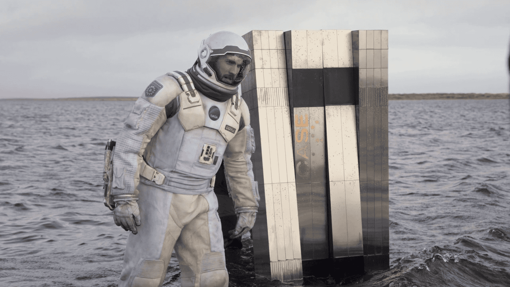
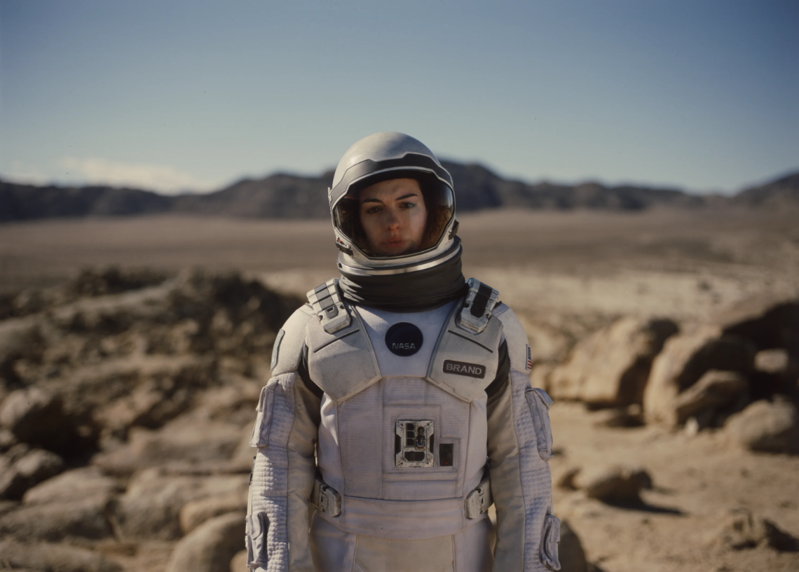
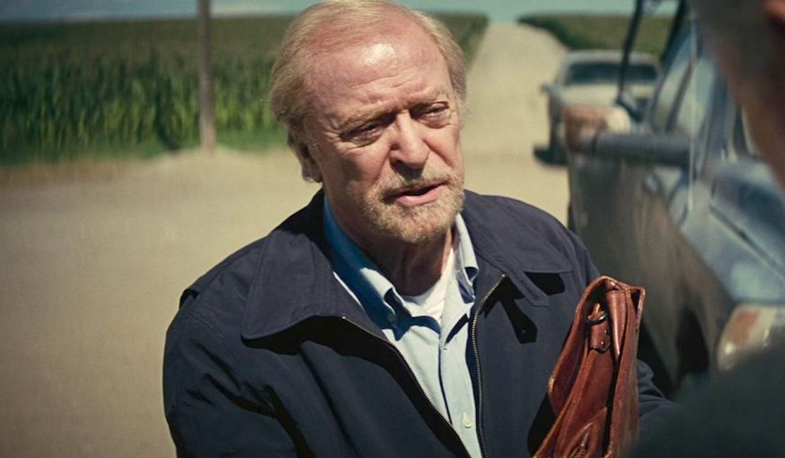
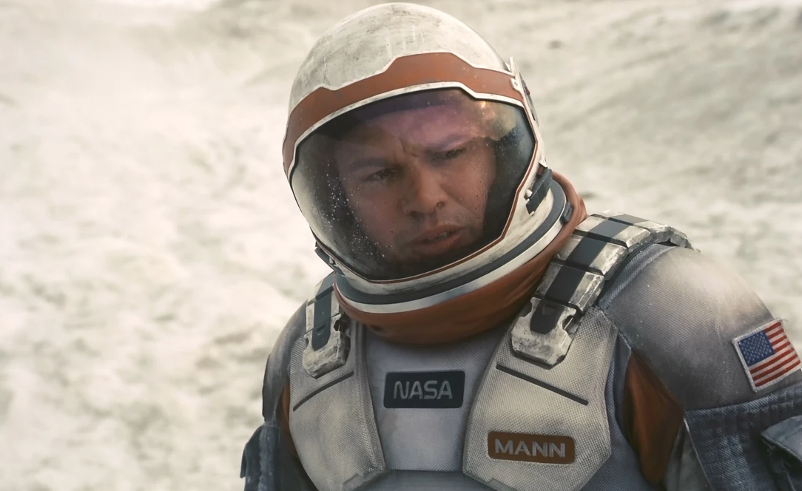

Um piloto visionário e pai devotado, dividido entre o chamado para salvar a humanidade e o desejo de proteger seus filhos. Sua coragem o conduz além das estrelas, mas seu coração nunca deixa a Terra.

Brilhante e teimosa, Murph carrega tanto a dor da ausência do pai quanto a chama da ciência. É através dela que a ponte entre gerações se mantém, transformando emoção em descoberta.

Filho mais velho de Cooper, que tenta sustentar a fazenda da família em um planeta condenado. Seu apego à Terra simboliza o peso da tradição diante do colapso inevitável.
Um robô com humor peculiar e lealdade inabalável. Sua lógica fria contrasta com a humanidade que, ironicamente, revela em momentos decisivos.

Astrofísica e exploradora, movida por ciência e por sentimentos que desafiam o espaço-tempo. Para ela, o amor pode ser tão mensurável quanto a gravidade.

Mentor de Amelia e figura intelectual da missão. Carrega consigo a esperança da humanidade, mas também um segredo capaz de mudar o destino de todos.

O herói falso. Cientista respeitado que, diante da solidão e do medo, expõe a fragilidade humana. Sua traição mostra que o maior perigo pode não estar nas estrelas, mas dentro de nós mesmos.
